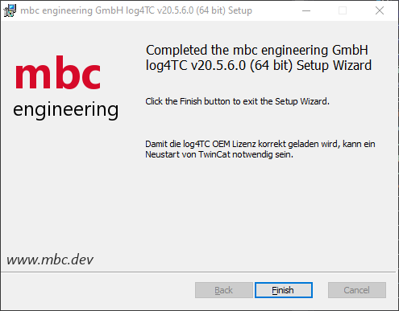
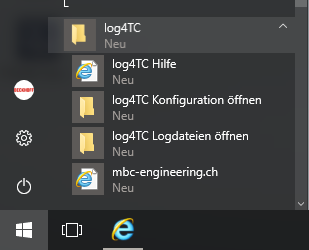
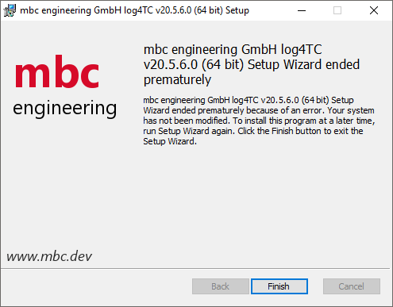

Installationsanleitung von log4TC
Setup
Den aktuellen Release von Log4TC kann hier geladen werden. Achten sie auf die Ziel Architektur x86 bzw x64!
Es wird Windows und Linux unterstützt.
Windows Installation
Voraussetzungen
- TwinCat 3.1 (min. 4024.00)
- Administrationsrechte für die Installation
Nur Service:
- min Windows 10 - 1607
- ADS Router - TC1000 | TC3 ADS
- Verwendet Microsoft .NET 8 (muss nicht installiert werden)
Beispiel Installation
Vorgehen zur Installation auf einem Zielsystem wie einem C6015 mit Windows 10 und einer x64 Architektur.
- Stellen Sie sicher das alle Anwendungen geschlossen sind.
- Kopieren des MSI Mbc.Log4Tc.Setup.Wix.x64.vxx.xx.xx.msi auf den Zielrechner. Führen Sie das MSI setup aus.
- Akzeptieren Sie den
log4TC Software-Lizenzvertrag. - Wählen sie die gewünschten Features. Nähere Beschreibeung hier
- Durch Klicken auf
Installwerden alle notwendigen Dateien auf das System kopiert und der log4TC Windows Service mit dem Namenmbc log4TC Servicegestartet.

Setup Features
log4TC Service
Note
Dieses Feature erscheint nur wenn sie ein ADS Router - TC1000 | TC3 ADS installiert haben.
Beinhaltet
- Windows Service zum schreiben der generierten Logmeldungen aus TwinCat
- Konfiguration Links im Startmenü

log4TC TwinCat 3 Bibliothek
Note
Dieses Feature erscheint nur wenn sie TwinCat 3.1 Engineering (XAE) min. 4024.00 installiert haben.
Beinhaltet
- Installiert die log4TC Twincat 3 Bibliothek lokal
- Bereitet die OEM Lizenz zur Registrierung für die Produktive Benutzung vor
- Kopiert das getting started Projekt unter
C:\ProgramData\log4TC\gettingstarted - Hilfe Links im Startmenü
Bekannte Fehler
Setup endet mit dem Fehler: ... Setup Wizard endet prematurely because of an error. Your system has not been modified. ...
In diesem Fall ist ein Fehler aufgetreten.

Starten sie das setup erneut mit der Kommandozeile ausgeführt als Administrator. Navigieren Sie in den Ordner mit dem MSI Setup per cd [folder]. Geben Sie folgendes ein: msiexec.exe /i "[setup].msi" /l*v install.log. Wenden Sie sich anschliessend mit dem install.log an uns.
Linux Installation
Note
Aktuell wird nur die Installation des log4TC Service auf Debian Distributionen unterstützt. Somit auch für die Beckhoff RT Linux® distribution
- Hinzufügen des log4TC sources in apt sources listen:
Zuerst den GPG-Schlüssel herunterladen und als keyring installieren:
sudo install -d -m 0755 /etc/apt/keyrings
wget -qO- https://mbc-engineering.github.io/log4TC/deb/log4tc-archive-keyring.gpg | sudo tee /etc/apt/keyrings/log4tc-archive-keyring.gpg > /dev/null
sudo chmod 0644 /etc/apt/keyrings/log4tc-archive-keyring.gpg
ASCII-kodierten Format (.asc) Schlüssel kann auch heruntergeladen werden unter: https://mbc-engineering.github.io/log4TC/deb/log4tc-archive-keyring.asc
Optional: Fingerprint prüfen (muss mit D3042271F3CDB50E enden):
gpg --show-keys --with-fingerprint /etc/apt/keyrings/log4tc-archive-keyring.gpg
Legacy list format /etc/apt/sources.list.d/log4tc.list:
deb [arch=amd64,arm64 signed-by=/etc/apt/keyrings/log4tc-archive-keyring.gpg] https://mbc-engineering.github.io/log4TC/deb stable main
New format /etc/apt/sources.list.d/log4tc.sources:
Types: deb
URIs: https://mbc-engineering.github.io/log4TC/deb
Suites: stable
Components: main
Architectures: amd64 arm64
Signed-By: /etc/apt/keyrings/log4tc-archive-keyring.gpg
Ohne Signaturprüfung kann
Trusted: yesverwendet werden. Dies wird nicht empfohlen.
- Aktualisieren der apt package listen:
sudo apt update
- Installation des log4TC Service:
sudo apt install Mbc.Log4Tc.Service
Anpassen der Konfigurationsdateien nach Wunsch
/etc/log4tc/config/appsettings.json/etc/log4tc/config/NLog.config
Überprüfen des log4TC Service status:
sudo systemctl status Mbc.Log4Tc.Service.service
- Bei Fehler internal logs prüfen:
sudo journalctl -u Mbc.Log4Tc.Service.service
ls /var/log/log4tc